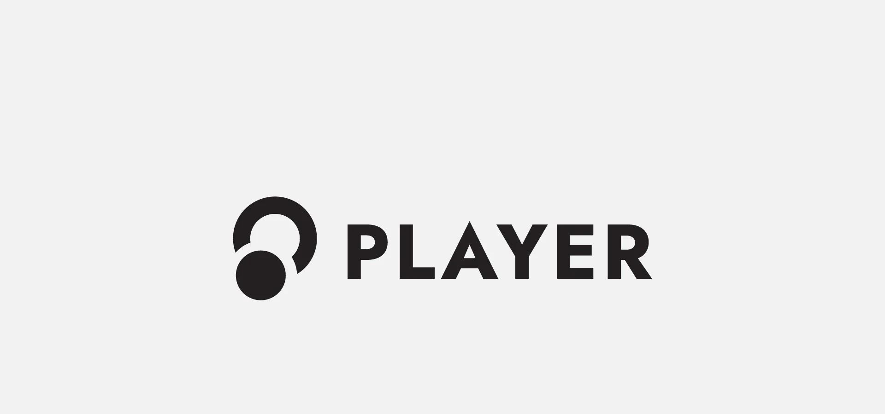
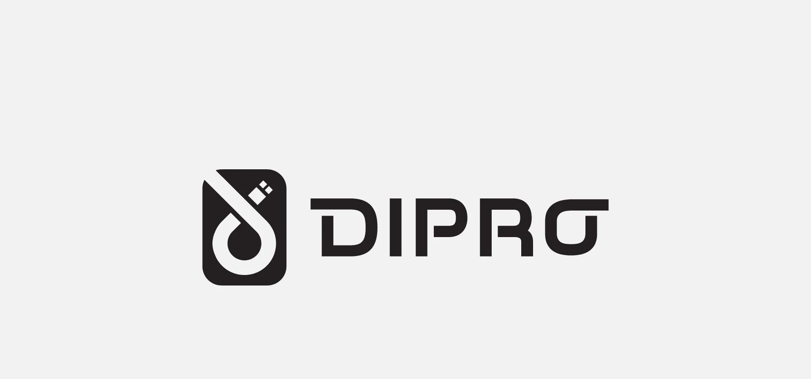
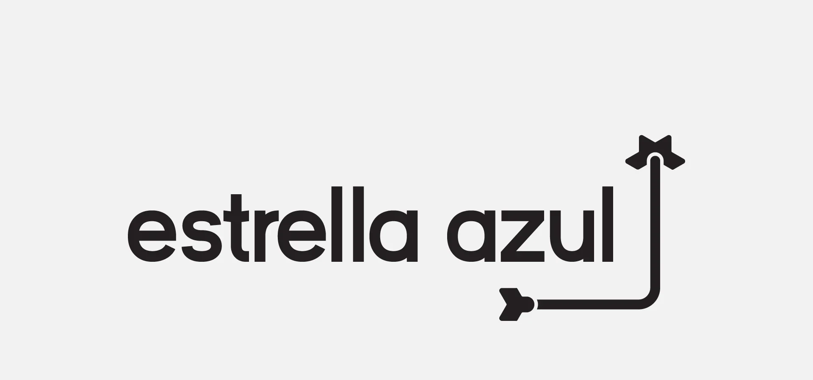
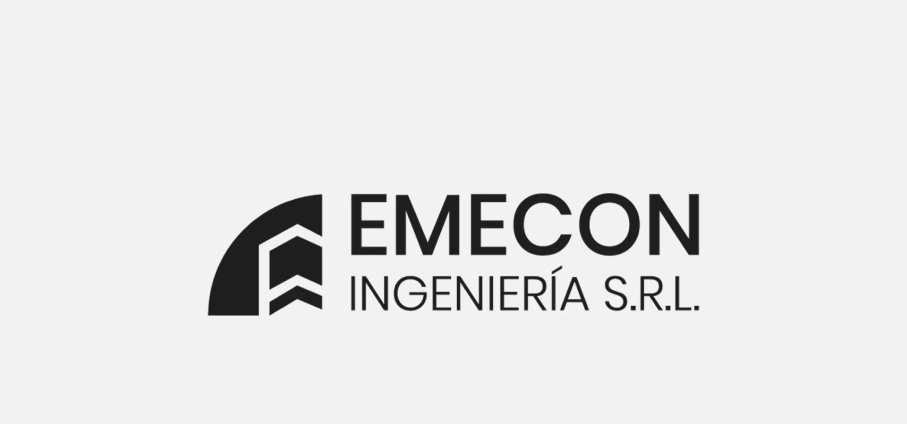
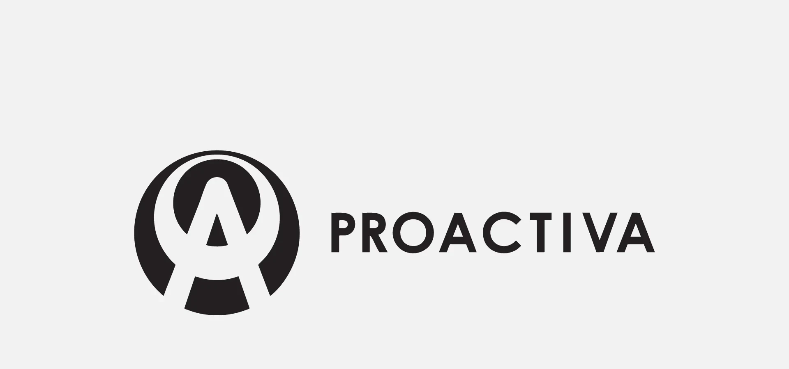
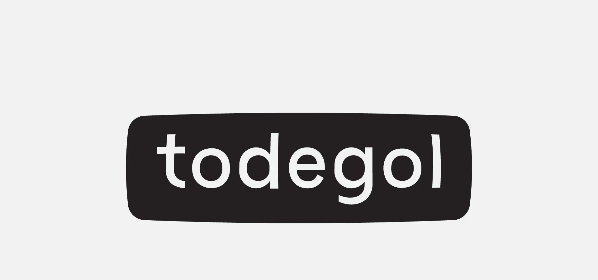
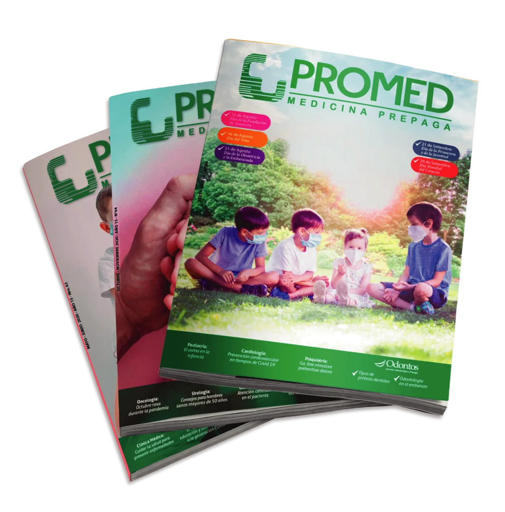

Branding · Selección
Identidades
y packaging
Seis marcas, una línea de packaging que sigue en uso y un sitio web: el oficio de marca, pieza por pieza.
Logofolio
Cada marca, en blanco y negro
Seis identidades en una sola tinta, cada una con su rubro.






Aplicaciones
Del logo a la góndola y a la web
El packaging de la línea de lámparas Argo, diseñado en Electropar (2017–2020), sigue en uso. Y la marca de Dipro llevada a su sitio web.


Editorial
Diario y revista
Diagramación diaria en Diario Extra (2015–2017) y ediciones mensuales de la revista Promed.

Créditos
- Identidades, packaging y web
- Kevin Mancuello
- Packaging Argo
- Electropar S.A. (2017–2020)